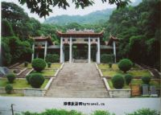

石竹山风景区位于福建省福州市下辖县级市福清市石竹街道。有兔耳岭的怪石灵雄，千岛湖的湖光山色，以石奇竹秀而得名，素有“雅胜鼓山”之誉，为福建省道教名山。山间有紫云洞、桃源洞、通天洞、日月洞、摘星台、化龙窝、鹤影石、鸳鸯石、棋盘少、龟蛇石、蟠桃石、洞天等奇岩怪石、天然石景。属闽中戴云山余脉西山山脉南段，主峰状元峰海拔534米，这里夏无酷暑，冬不严寒，年均气温保持在19.7℃。 因“石能留影常来鹤，竹欲摩空尽作龙”而得名。山上有胜景石竹寺、狮子岩等128处。明朝徐霞客游记中说：“岩石最胜，亦为九仙祈梦所”，现为福建省十大风景区之一。
